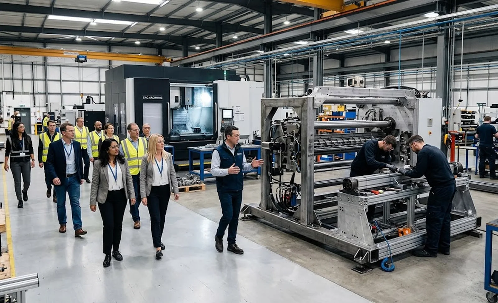
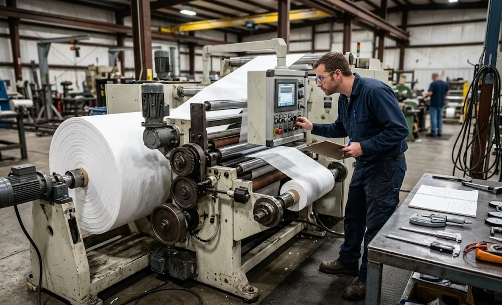

Published October 2, 2026 | By HDPTH Technical Editorial Team

Most slitter rewinder buying disputes trace back to a decision made before the contract was signed: the buyer compared quotations but never saw the factory. Catalogues and renderings are equalising tools — a trading company renting floor space can present as convincingly as a manufacturer with three decades of machining behind it. A structured factory visit closes that gap — but only if you arrive with a checklist, not a guided itinerary prepared by the sales team. Pair the findings with the total cost of ownership comparison and the project schedule to complete the supplier evaluation.
Before the visit: preparation that makes the tour count
An unprepared visit becomes a showroom tour. Before travelling, send the supplier an agenda with the areas you want to see — machining, fabrication, assembly, test floor, parts warehouse, packing — and the documents to review: quality certificates, calibration records, an example FAT protocol and reference customers. Ask whether a machine similar to your specification will be on the test floor during your visit; a demonstration on a close-to-your-build machine is worth ten showroom units. Bring your own technical person, not just procurement, and bring your material — a sample roll you can run if a test is offered.
Stop 1: machining and fabrication — where quality is created or lost
Start where the machine is born, not where it is painted. In fabrication, look for welding jigs, stress-relief of frames before machining, and crane capacity consistent with the machine sizes claimed. In machining, the key question is which critical components are produced in-house versus purchased: unwind and rewind shaft bearing housings, roller journals, knife carriers and guide-roll bases set the geometric accuracy the assembly hall can never recover later. Watch for a CNC machining centre that machines bearing seats in a single setup — that is how concentricity between frame sides is preserved. Ask how rollers are balanced; in-house grinding and dynamic balancing tell a different story from buying finished rolls.
Stop 2: assembly discipline
Walk to the active assembly bays and observe. Are torque values recorded? Are bearings installed with induction heaters and controlled fits, or improvised on the floor? Is there a visible assembly checklist, and can the supervisor produce a completed one from a machine shipped last month? Cleanliness is a quality indicator: protected roller surfaces, capped pneumatic and hydraulic ports and covered cabinets all predict how the machine will arrive at your site. Ask how many machines of your type the line builds per month — it tells you whether your order is routine or an experiment.
| Tour stop | What you are verifying | Red flags |
|---|---|---|
| Fabrication & machining | Stress-relieved frames, single-setup boring of bearing seats, in-house roll grinding and balancing | No machining floor at all; “we outsource machining” without named partners |
| Assembly | Recorded checklists, controlled fastening, cleanliness, protected surfaces | Open parts in bins, no documentation at stations, rushed final tightening |
| Test floor | Real FAT runs with calibrated instruments, material on the roll, safety functions tested | Only short power-on checks; no stock of test material or instruments |
| Parts & service | Spare-parts stock, part-number system, packing discipline for export | No spares warehouse; generic part lists without numbers |
| Documents | Calibration certificates, inspection records, example FAT/SAT protocols | Certificates shown only as scans; records produced “on request later” |
Stop 3: the test floor and FAT infrastructure
The test floor is the strongest single predictor of how your factory acceptance test will go. You want to see power and floor space for full machines under load, calibrated instruments with visible stickers, test material in stock and ideally a machine running a sustained test. Ask how long a typical FAT lasts and what criteria are measured; suppliers who run real production-speed trials will describe them in detail, while those who only jog machines stay vague. If the supplier offers a demonstration, run your own material and inspect the slit edge quality and rewind hardness yourself.

Stop 4: parts, service and the questions sales will not raise
Finish the tour where the relationship will live for the next decade: the spare-parts operation and the service team. Look for a parts warehouse organised by machine series with a real part-number system, export-grade packing and staff who can quote lead times without asking a manager. Ask how many service engineers are employed, how remote support is delivered and what the average response time is — then verify with a reference customer. Close the visit with the commercial questions: which components are bought out and from which brands, and whether the warranty and spare parts commitments can be written into the contract exactly as described today.
Evaluating slitter rewinder suppliers?
HDPTH welcomes customer audits: visit our machining, assembly and test floors, run your material on a demonstration machine and review our FAT protocols before you commit. Send your specification and we will arrange a factory visit or a live remote tour.
Arrange a Factory VisitQuestions to put to every vendor
- Which critical components — frames, rollers, knife holders, shafts — do you machine in-house, and can we see the machining centres that produce them?
- Can you show a completed assembly checklist and a calibration certificate for an instrument in active use today?
- What does a typical FAT include for a machine of our type, and may we run our own material on the test floor?
- How many service engineers do you employ, and what is the documented spare-parts availability for machines shipped five years ago?
Frequently asked questions
Why should a buyer visit a slitter rewinder factory before ordering?
Catalogues, quotations and video calls all show you what the supplier wants you to see. A factory tour shows you what they cannot hide: whether critical components are machined in-house or bought cheaply, how frames are stress-relieved, how machines are assembled, whether a real test floor exists, and how the workshop is organised. The visit converts a paper evaluation into physical evidence — the most effective way to distinguish a manufacturer from an assembler before you commit a five- or six-figure order.
What should I look at first during a converting machinery factory tour?
Start with the machining and fabrication area, not the showroom. Look for large CNC machining centres boring frame and roll journals in one setup, stress-relief treatment before welding is machined, and a crane capacity that matches the machines they claim to build. Then follow the material flow: parts stores, assembly bays, test floor and packing area. Where the money is visible — machine tools, measurement equipment, test rigs — tells you more than any certificate folder.
How do I verify quality claims during a factory visit?
Ask for evidence tied to a machine currently in production, not sample documents. Request the inspection record of a roller being ground today, the instrument’s calibration sticker and a random assembly checklist from an active order. Watch whether torque values, runout and cleanliness are recorded or just promised. A supplier with a real quality system produces these documents in minutes; an assembler improvises.
Should I ask to see my machine being built or tested?
Yes — ideally twice: once mid-assembly and once at the factory acceptance test. A mid-build visit lets you correct specification misunderstandings while they are still cheap to fix, and shows the internal quality of a machine you will otherwise only see painted. Schedule the mid-assembly milestone in the contract, and combine it with the FAT review so travel is efficient.
Can I audit a supplier remotely if travel is not possible?
A remote audit can substitute part of the visit: a structured live video walk-through with an agenda you send in advance, pan-and-zoom requests rather than a prepared film, third-party inspection reports on bought-out components, and reference calls with converters running similar machines. It is weaker than being on the floor — you cannot judge workshop culture through a lens — so for a significant line investment one on-site visit or a third-party factory inspection is worth the cost.
Sources
- ISO 9001 (2015 edition page): quality management system requirements you can verify on a factory tour
- ISO 9001 auditing guidance: evidence-based auditing practice applicable to supplier visits
- EU Machinery Regulation (EU) 2023/1230: duties a machinery manufacturer must be able to demonstrate
- ISO 55001: Asset management — evaluating suppliers in a life-cycle asset context